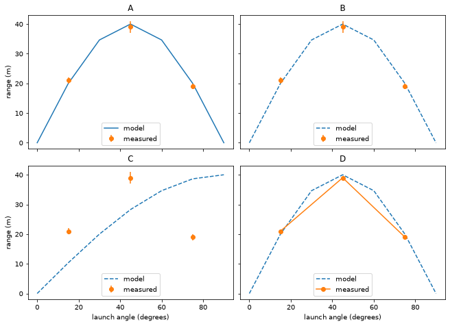

8.11. תרגול מסכם#
שלוש המשימות בעמוד הזה ממשיכות את הזריקה. משימה 1 מציגה כגרף את הטווח כתלות בזווית, כמו במשימה 1 של סעיף 7.11. נסו לפתור כל משימה על דף, בלי להריץ, ורק אחר כך הריצו ובדקו.
8.11.1. לקרוא קוד ציור בלי להריץ#
כדי לדעת מה קוד ציור יצייר, עברו עליו שורה אחר שורה ושאלו מה כל שורה מוסיפה לתמונה:
plt.subplots(...) קובע כמה צירים יש וכיצד הם מסודרים.כל קריאה ל-
plot, scatter, errorbar או hist מוסיפה לציר שלה דבר אחד: קו, נקודות נפרדות, נקודות עם קווי שגיאה או עמודות. הארגומנטים linestyle, marker ו-fmt קובעים כיצד הוא נראה.כל
label= הופך לשורה במקרא, אבל רק אם בהמשך נקרא ax.legend().
set_xlabel, set_ylabel ו-set_title כותבים את הטקסט על הצירים, ו-set_xscale("log") משנה את סולם הציר.כדי לדעת כיצד עקומה נראית, חשבו כמה ערכים של המערכים שהיא מציירת: הראשון, האחרון והגדול ביותר.
8.11.2. משימה 1: הגרף שהקוד מצייר#
הקוד הבא משווה את הטווח שהמודל \(R = v_0^2 \sin(2\theta)/g\) מנבא לטווחים שנמדדו בשלוש זוויות. קראו אותו בלי להריץ וענו:
א. מה תדפיס הפקודה print(angles) אחרי שורה 5? מהו הערך הגדול ביותר במערך R_model, ובאיזו זווית?
ב. מה כתוב על כל ציר, מה מצויר על הגרף, ומה יופיע במקרא? בין אילו ערכים נמתח קו השגיאה של המדידה ב-45°?
ג. איזה מארבעת השרטוטים שמתחת לקוד הוא הגרף שהקוד מצייר?
ד. משנים את שורה 5 ל-angles = np.linspace(0, 90, 4). מהו עכשיו הערך הגדול ביותר בקו המקווקו, ובאילו זוויות?
1import numpy as np
2import matplotlib.pyplot as plt
3
4g, v0 = 10.0, 20.0
5angles = np.linspace(0, 90, 7)
6R_model = v0**2 * np.sin(np.radians(2 * angles)) / g
7
8angles_meas = np.array([15.0, 45.0, 75.0])
9R_meas = np.array([21.0, 39.0, 19.0])
10R_err = np.array([1.0, 2.0, 1.0])
11
12fig, ax = plt.subplots()
13ax.plot(angles, R_model, linestyle="--", label="model")
14ax.errorbar(angles_meas, R_meas, yerr=R_err, fmt="o", label="measured")
15ax.set_xlabel("launch angle (degrees)")
16ax.set_ylabel("range (m)")
17ax.legend()
18plt.show()

פתרון
א. np.linspace(0, 90, 7) פורש 7 נקודות במרווחים של 15°:
[ 0. 15. 30. 45. 60. 75. 90.]
הסינוס של \(2\theta\) מגיע ל-1 כש-\(2\theta = 90^\circ\), כלומר בזווית 45°. שם \(R = 20^2 \cdot 1 / 10 = 40\), ולכן הערך הגדול ביותר ב-R_model הוא 40.0, בזווית 45°.
ב. על הציר האופקי כתוב launch angle (degrees), ועל האנכי range (m). על הגרף יש קו מקווקו שמחבר את 7 נקודות המודל, ושלוש נקודות מדידה, בלי קו ביניהן, עם קווי שגיאה. במקרא שתי שורות: model ו-measured. במדידה של 45° הטווח 39 והשגיאה 2, ולכן קו השגיאה נמתח מ-37 עד 41.
ג. שרטוט B. ב-A קו המודל רציף ולא מקווקו; ב-C המודל מגיע לשיא ב-90°, כאילו נכתב \(\sin\theta\) במקום \(\sin 2\theta\); ב-D המדידות מחוברות בקו ואין להן קווי שגיאה.
ד. עכשיו angles הוא [ 0. 30. 60. 90.], ואין נקודה ב-45°. הערך הגדול ביותר הוא \(40 \sin 60^\circ \approx 34.6\), בזוויות 30° ו-60°. הקו המקווקו מחבר רק ארבע נקודות, ולכן השיא שלו נמוך מהשיא האמיתי, 40.
8.11.3. משימה 2: פונקציה שמחזירה את הנתונים לגרף#
בזריקה אנכית כלפי מעלה, הגובה בזמן \(t\) הוא \(y(t) = v_0 t - \tfrac{1}{2} g t^2\), והגוף חוזר לקרקע בזמן \(t = 2v_0/g\).
א. השלימו את הפונקציה height_curve(v0, g, n): היא מחזירה שני מערכים, n זמנים במרווחים שווים מרגע הזריקה (0) עד רגע הנחיתה, ואת הגובה בכל אחד מהזמנים האלה. שתי שורות ההדפסה בודקות אותה מול דוגמה.
ב. הקוד שבתא שאחריה משתמש בפונקציה כדי לצייר את המודל לכדור שנזרק ב-10 מ’/ש’, ומוסיף שלוש מדידות. השלימו את שלוש השורות המסומנות:
המדידות כנקודות עם קווי השגיאה
y_err, עם התווית measured;תווית לציר האנכי: גובה, במטרים;
שמירת הגרף לקובץ
height.png ברזולוציה של 300 dpi.
def height_curve(v0, g, n):
"""n times t (s) from launch to landing, and the heights y (m)."""
# complete here
pass
t, y = height_curve(20.0, 10.0, 5)
# expected: [0. 1. 2. 3. 4.]
print(t)
# expected: [ 0. 15. 20. 15. 0.]
print(y)
1t_meas = np.array([0.5, 1.0, 1.5]) # s
2y_meas = np.array([4.0, 5.2, 3.6]) # m
3y_err = np.array([0.3, 0.3, 0.3]) # m
4
5t, y = height_curve(10.0, 10.0, 50)
6
7fig, ax = plt.subplots()
8ax.plot(t, y, label="model")
9# (1) measurements with error bars
10ax.set_xlabel("t (s)")
11# (2) label of the vertical axis
12ax.legend()
13# (3) save to height.png at 300 dpi
14plt.show()
פתרון
א.
def height_curve(v0, g, n):
"""n times t (s) from launch to landing, and the heights y (m)."""
t = np.linspace(0, 2 * v0 / g, n)
y = v0 * t - 0.5 * g * t**2
return t, y
t, y = height_curve(20.0, 10.0, 5)
print(t) # [0. 1. 2. 3. 4.]
print(y) # [ 0. 15. 20. 15. 0.]
ב.
# (1)
ax.errorbar(t_meas, y_meas, yerr=y_err, fmt="o", label="measured")
# (2)
ax.set_ylabel("y (m)")
# (3)
fig.savefig("height.png", dpi=300)
שורה (1) באה לפני ax.legend(), כדי שהתווית שלה תופיע במקרא, ושורה (3) באה לפני plt.show(), כמו בסעיף 8.10.
8.11.4. משימה 3: מצאו את שלוש הטעויות#
הקוד הבא אמור לצייר את מסלולי הזריקה בשלוש זוויות על גרף אחד, עם מקרא שמבדיל בין הזוויות. הוא רץ בלי שגיאה, אבל מתקבלות שלוש תמונות נפרדות, מקרא מופיע רק באחרונה, והעקומה של 30° נוחתת ב-x שלילי, משמאל לנקודת הזריקה.
לפני שמריצים: מצאו את שלוש הטעויות לפי מספרי השורות, תקנו כל אחת והסבירו במשפט אחד. שימו לב שטעות אחת יכולה להסתיר טעות אחרת.
1g, v0 = 10.0, 20.0
2angles_deg = [30.0, 45.0, 60.0]
3
4for angle in angles_deg:
5 fig, ax = plt.subplots()
6 theta = angle
7 t = np.linspace(0, 2 * v0 * np.sin(theta) / g, 50)
8 x = v0 * np.cos(theta) * t
9 y = v0 * np.sin(theta) * t - 0.5 * g * t**2
10 ax.plot(x, y, label="trajectory")
11
12ax.legend()
13plt.show()
פתרון
שורה 5:
plt.subplots() בתוך הלולאה יוצר figure חדש בכל סיבוב, ולכן כל עקומה מצוירת בתמונה משלה, ו-ax.legend() שאחרי הלולאה פועל רק על הציר האחרון. צריך ליצור את fig, ax פעם אחת, לפני הלולאה.שורה 6:
np.sin ו-np.cos מצפות לזווית ברדיאנים, ו-30 רדיאנים הם זווית אחרת לגמרי (הסינוס שלה שלילי). צריך theta = np.radians(angle).שורה 10: אותה תווית לכל העקומות. אחרי התיקון של שורה 5 כל העקומות על אותו גרף, ואז רואים שבמקרא שלוש שורות זהות. צריך תווית שתלויה בזווית.
g, v0 = 10.0, 20.0
angles_deg = [30.0, 45.0, 60.0]
fig, ax = plt.subplots()
for angle in angles_deg:
theta = np.radians(angle)
t = np.linspace(0, 2 * v0 * np.sin(theta) / g, 50)
x = v0 * np.cos(theta) * t
y = v0 * np.sin(theta) * t - 0.5 * g * t**2
ax.plot(x, y, label=f"{angle} deg")
ax.legend()
plt.show()
הטעות של שורה 5 מסתירה את זו של שורה 10: כל עוד כל עקומה בתמונה משלה, אי אפשר לראות שהתוויות זהות.